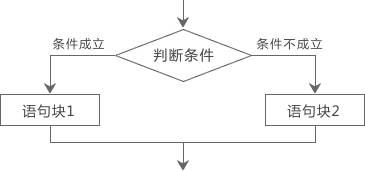
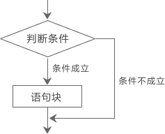
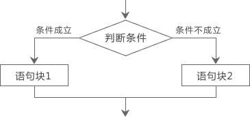
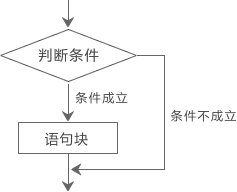

C语言if else语句详解
前面我们看到的代码都是顺序执行的，也就是先执行第一条语句，然后是第二条、第三条……一直到最后一条语句，这称为顺序结构。
但是对于很多情况，顺序结构的代码是远远不够的，比如一个程序限制了只能成年人使用，儿童因为年龄不够，没有权限使用。这时候程序就需要做出判断，看用户是否是成年人，并给出提示。
在C语言中，使用
如果条件成立，也即 age 大于或者等于 18，那么执行
if 和 else 是两个新的关键字，if 意为“如果”，else 意为“否则”，用来对条件进行判断，并根据判断结果执行不同的语句。总结起来，if else 的结构为：

所谓语句块（Statement Block），就是由
由于if else 语句可以根据不同的情况执行不同的代码，所以也叫分支结构或选择结构，上面的代码中，就有两个分支。
求两个数中的较大值：
输入两个整数：34 28↙
34和28的较大值是：34
本例中借助变量max，用max来保存较大的值，最后将max输出。
单独使用 if 语句的形式为：

只使用 if 语句来求两个数中的较大值：
输入两个整数：34 28
34和28的较大值是：34
本例程序中，输入两个数a、b。把b先赋予变量max，再用 if 语句判别max和b的大小，如max小于b，则把b赋予max。因此max中总是大数，最后输出max的值。
也就是说，一旦遇到能够成立的判断条件，则不再执行其他的语句块，所以最终只能有一个语句块被执行。
例如，使用多个 if else 语句判断输入的字符的类别：
Input a character:e↙
This is a small letter
本例要求判别键盘输入字符的类别。可以根据输入字符的ASCII码来判别类型。由ASCII码表可知ASCII值小于32的为控制字符。在“0”和“9”之间的为数字，在“A”和“Z”之间为大写字母， 在“a”和“z”之间为小写字母，其余则为其它字符。这是一个多分支选择的问题，用多个 if else 语句编程，判断输入字符ASCII码所在的范围，分别给出不同的输出。例如输入为“e”，输出显示它为小写字符。
在使用 if 语句时还应注意以下两点：
Input two numbers:12 68
a<b
if 语句嵌套时，要注意 if 和 else 的配对问题。C语言规定，else 总是与它前面最近的 if 配对，例如：
但是对于很多情况，顺序结构的代码是远远不够的，比如一个程序限制了只能成年人使用，儿童因为年龄不够，没有权限使用。这时候程序就需要做出判断，看用户是否是成年人，并给出提示。
在C语言中，使用
if和else关键字对条件进行判断。请先看下面的代码：
#include <stdio.h>
int main()
{
int age;
printf("请输入你的年龄：");
scanf("%d", &age);
if(age>=18){
printf("恭喜，你已经成年，可以使用该软件！\n");
}else{
printf("抱歉，你还未成年，不宜使用该软件！\n");
}
return 0;
}
可能的运行结果：
请输入你的年龄：23↙
恭喜，你已经成年，可以使用该软件！
请输入你的年龄：16
抱歉，你还未成年，不宜使用该软件！
age>=18是需要判断的条件，>=表示“大于等于”，等价于数学中的≥。如果条件成立，也即 age 大于或者等于 18，那么执行
if后面的语句（第8行）；如果条件不成立，也即 age 小于 18，那么执行else后面的语句（第10行）。if 和 else 是两个新的关键字，if 意为“如果”，else 意为“否则”，用来对条件进行判断，并根据判断结果执行不同的语句。总结起来，if else 的结构为：
if(判断条件){
语句块1
}else{
语句块2
}

所谓语句块（Statement Block），就是由
{ }包围的一个或多个语句的集合。如果语句块中只有一个语句，也可以省略{ }，例如：
if(age>=18) printf("恭喜，你已经成年，可以使用该软件！\n");
else printf("抱歉，你还未成年，不宜使用该软件！\n");
由于if else 语句可以根据不同的情况执行不同的代码，所以也叫分支结构或选择结构，上面的代码中，就有两个分支。
求两个数中的较大值：
#include <stdio.h>
int main()
{
int a, b, max;
printf("输入两个整数：");
scanf("%d %d", &a, &b);
if(a>b) max=a;
else max=b;
printf("%d和%d的较大值是：%d\n", a, b, max);
return 0;
}
运行结果：输入两个整数：34 28↙
34和28的较大值是：34
本例中借助变量max，用max来保存较大的值，最后将max输出。
只使用if语句
有的时候，我们需要在满足某种条件时进行一些操作，而不满足条件时就不进行任何操作，这个时候我们可以只使用 if 语句。也就是说，if else 不必同时出现。单独使用 if 语句的形式为：
if(判断条件){
语句块
}

只使用 if 语句来求两个数中的较大值：
#include <stdio.h>
int main()
{
int a, b, max;
printf("输入两个整数：");
scanf("%d %d", &a, &b);
max=b; // 假设b最大
if(a>b) max=a; // 如果a>b，那么更改max的值
printf("%d和%d的较大值是：%d\n", a, b, max);
return 0;
}
运行结果：输入两个整数：34 28
34和28的较大值是：34
本例程序中，输入两个数a、b。把b先赋予变量max，再用 if 语句判别max和b的大小，如max小于b，则把b赋予max。因此max中总是大数，最后输出max的值。
多个if else语句
if else 语句也可以多个同时使用，构成多个分支，形式如下：
if(判断条件1){
语句块1
} else if(判断条件2){
语句块2
}else if(判断条件3){
语句块3
}else if(判断条件m){
语句块m
}else{
语句块n
}
也就是说，一旦遇到能够成立的判断条件，则不再执行其他的语句块，所以最终只能有一个语句块被执行。
例如，使用多个 if else 语句判断输入的字符的类别：
#include <stdio.h>
int main(){
char c;
printf("Input a character:");
c=getchar();
if(c<32)
printf("This is a control character\n");
else if(c>='0'&&c<='9')
printf("This is a digit\n");
else if(c>='A'&&c<='Z')
printf("This is a capital letter\n");
else if(c>='a'&&c<='z')
printf("This is a small letter\n");
else
printf("This is an other character\n");
return 0;
}
运行结果：Input a character:e↙
This is a small letter
本例要求判别键盘输入字符的类别。可以根据输入字符的ASCII码来判别类型。由ASCII码表可知ASCII值小于32的为控制字符。在“0”和“9”之间的为数字，在“A”和“Z”之间为大写字母， 在“a”和“z”之间为小写字母，其余则为其它字符。这是一个多分支选择的问题，用多个 if else 语句编程，判断输入字符ASCII码所在的范围，分别给出不同的输出。例如输入为“e”，输出显示它为小写字符。
在使用 if 语句时还应注意以下两点：
- 在 if 语句中，判断条件必须用括号括起来。
-
语句块由
{ }包围，但要注意的是在}之后不需要再加分号;（当然加上也没错）。
if语句的嵌套
if 语句也可以嵌套使用，例如：
#include <stdio.h>
int main(){
int a,b;
printf("Input two numbers:");
scanf("%d %d",&a,&b);
if(a!=b){ //!=表示不等于
if(a>b) printf("a>b\n");
else printf("a<b\n");
}else{
printf("a=b\n");
}
return 0;
}
运行结果：Input two numbers:12 68
a<b
if 语句嵌套时，要注意 if 和 else 的配对问题。C语言规定，else 总是与它前面最近的 if 配对，例如：
if(a!=b) // ①
if(a>b) printf("a>b\n"); // ②
else printf("a<b\n"); // ③
③和②配对，而不是和①配对。关注公众号「站长严长生」，在手机上阅读所有教程，随时随地都能学习。内含一款搜索神器，免费下载全网书籍和视频。

微信扫码关注公众号